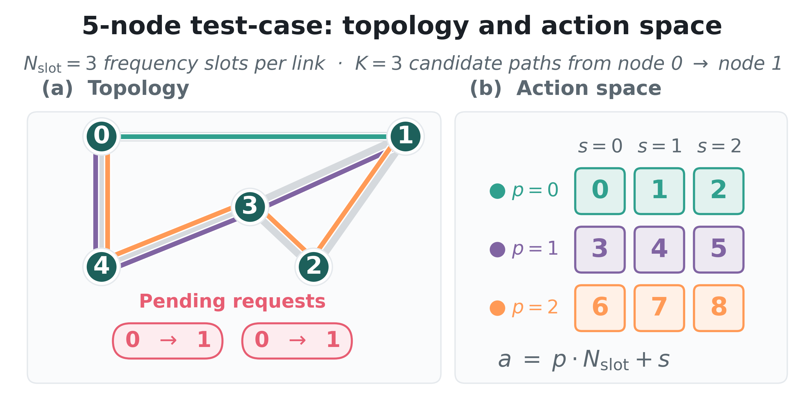
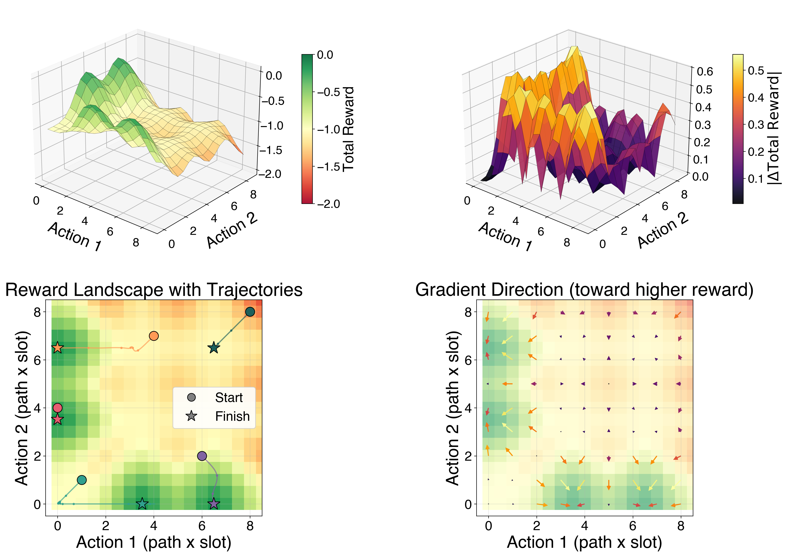
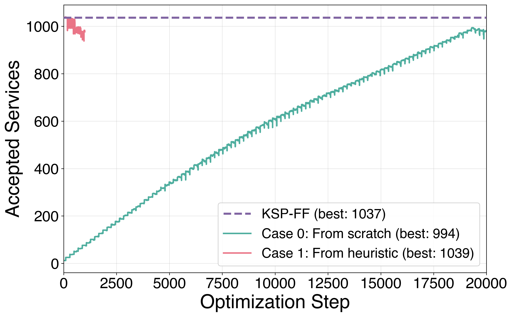

Differentiable Simulation
XLRON is, to our knowledge, the first fully differentiable optical-network simulator. Both the physical layer (Raman ODE, ISRS GN integrals, Nyquist subchannels, ASE noise) and the resource allocation logic (path selection, slot assignment, action validity checks) flow gradients end-to-end. This unlocks two qualitatively new capabilities:
- Gradient-based optimization of continuous physical parameters — Raman pump powers, channel launch powers, amplifier gains. See the pump optimization result.
- Direct gradient-based RSA — treating the action at each request as a continuous parameter and using the gradient of the cumulative reward to maximise accepted services.
The full mathematical detail and API are documented in Differentiable DRA Pipeline. This page summarises the published results.
How it works
JAX provides automatic differentiation; the only non-trivial pieces are (a) the discrete operations in the resource-allocation logic (argmax, comparison, indexing, rounding), and (b) the iterative inner solvers in the DRA pipeline.
Discrete operations are handled with straight-through gradient estimators: the forward pass uses the exact discrete operation, the backward pass uses a differentiable, temperature-controlled approximation (softmax for argmax, sigmoid for comparison, etc.). XLRON exposes these via xlron/environments/diff_utils.py (see the GN model docs).
Iterative solvers are wrapped with custom JVP rules so that, from JAX's point of view, each solver is a single differentiable operation. The Raman ODE boundary-value solve uses an Implicit Function Theorem-based reverse pass; the Levenberg–Marquardt fit uses a stop-gradient with the per-channel ODE-derived Raman gain carrying the dominant sensitivity.
Enable it on any environment with:
--differentiable --temperature=1.0
When --differentiable is set, the diff_utils functions return the smoothed gradient on the backward pass. When unset (the default), they fall through to the hard discrete operation with no overhead.
Reward-landscape visualization
To build intuition for what the gradients look like in this discrete-reward setting, consider a 2-request RSA problem on a small topology:

The reward landscape over the two action variables is piecewise constant. The straight-through estimators produce a well-defined gradient field that points toward higher-reward regions, even though the true objective has zero gradient almost everywhere:

Direct RSA optimization on NSFNET
We treat the action at each of 2,000 sequential requests on NSFNET (100 FSU, k=5, incremental loading) as a continuous parameter and optimize the joint action sequence with Adam.

- From scratch: with all 2,000 actions initialized to zero, the optimizer climbs from 0 → 994 accepted services using only first-order gradients, no domain knowledge.
- From the KSP-FF heuristic (1,037 services): the optimizer briefly improves to 1,039 before drifting away — a window where gradient-based refinement of a heuristic solution is possible, but stability is an open challenge.
This is a hard problem: each action constrains the feasibility of every subsequent action. The result demonstrates that gradient information is useful for combinatorial RSA, while also showing the open research question of how best to combine gradient signal with the discrete objective. We see the most natural near-term applications in:
- Continuous physical parameters where the landscape is genuinely smooth (pump powers, launch powers — see Physical Layer).
- Augmenting RL training with a low-variance gradient signal rather than replacing it.
- Hybrid approaches alternating between gradient-based refinement and discrete local search.
Reproduce all of the above with the commands in the XLRON framework paper reproduction guide.